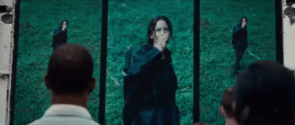
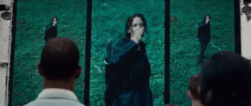

Em uma visão arrepiante do futuro, "Jogos Vorazes" mergulha profundamente em um pesadelo distópico que ecoa além da ficção, ecoando um alerta ensurdecedor. Na saga cinematográfica dirigida por Gary Ross e baseada na série literária de Suzanne Collins, a humanidade enfrenta sua própria degeneração moral, espelhada em um espetáculo sádico onde jovens são forçados a lutar até a morte por sobrevivência.
A manchete da trama gira em torno da jovem Katniss Everdeen, interpretada por Jennifer Lawrence, que se vê arrastada para uma competição brutal conhecida como "Jogos Vorazes". Nesse cenário distorcido, crianças são selecionadas por sorteio para representar seus distritos em um combate mortal transmitido para todo o país. O que emerge é uma história de desespero, sacrifício e a crueldade de uma sociedade que prioriza a subsistência à custa de sua própria humanidade.
Com um olhar afiado sobre as desigualdades sociais, o enredo se desdobra em meio a um mundo à beira do colapso. Os distritos periféricos sofrem enquanto a capital opulenta prospera, criando um abismo cada vez mais profundo entre ricos e pobres. À medida que os jogos avançam, a luta por sobrevivência transcende os limites físicos, explorando os aspectos mais sombrios da natureza humana.

 

A saga revela não apenas a capacidade de brutalidade inimaginável que as pessoas são capazes de infligir umas às outras, mas também a fragilidade moral que sustenta a civilização. Enquanto a audiência é arrebatada pela agonia e pela esperança de Katniss e seus aliados, o espetáculo grotesco dos Jogos Vorazes ecoa como um espelho de nossa própria propensão à indiferença e à exploração.
Mais do que uma série de filmes, "Jogos Vorazes" ressoa como um alerta para as consequências nefastas de uma sociedade que coloca o poder e o entretenimento acima do valor da vida humana. Ao nos transportar para um futuro distópico que, de maneira alarmante, não parece tão distante assim, a franquia nos desafia a confrontar nossa própria complacência em relação à desigualdade e à violência, enquanto levanta questões perturbadoras sobre a natureza humana e a linha tênue entre civilização e barbárie.
“E QUE A SORTE ESTEJA SEMPRE A SEU FAVOR"